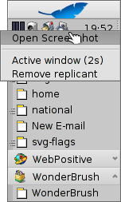

Aplikasi command-line khusus-haiku
Aplikasi command-line khusus-haiku
| Lokasi: | /boot/system/bin/ /boot/system/non-packaged/bin/ ~/config/bin/ ~/config/non-packaged/bin/ |
Semua aplikasi commandline yang dikirimkan dengan Haiku ada di /boot/system/bin/. Aplikasi commandline Anda sendiri atau tambahan yang diinstal juga akan muncul di sana, atau di ~/config/bin/, ketika diinstal dari paket .hpkg . Jika tidak, Anda dapat meletakkan mereka di /boot/system/non-packaged/bin/ atau ~/config/non-packaged/bin/. Semua lokasi ini adalah bagian dari variabel PATH dan karenanya secara otomatis ditemukan.
Berikut ini bukan daftar lengkap dari semua aplikasi CLI khusus Haiku, ini berfungsi hanya untuk menyoroti beberapa yang paling berguna untuk memberi Anda perasaan. Merasa terdorong untuk menjelajahi apa yang ada di bin/ sedikit pada Anda sendiri. eksekusi aplikasi dengan parameter --help menunjukkan penggunaan perintah dan semua berbagai pilihannya.
 berhubungan dengan atribut: listattr, catattr, addattr, rmattr, copyattr
berhubungan dengan atribut: listattr, catattr, addattr, rmattr, copyattr
Perintah-perintah ini digunakan untuk menampilkan, membaca, menambah dan menghapus atribut file. Ingat bahwa meta data ini saat ini hanya tersedia pada volume yang diformat BFS. Memindahkan file ke sistem file lain akan menghapus semua atribut!
Semua perintah ini dijelaskan dalam topik Atribut di Terminal.
Berkaitan dengan index: lsindex, mkindex, reindex, rmindex
Dengan perintah-perintah ini Anda membuat daftar, membuat, mengindeks ulang, dan menghapus atribut ke indeks BFS. Setiap volume memiliki indeks sendiri, ingat bahwa ketika menyalin file dari satu volume ke volume lain.
Perintah-perintah ini dijelaskan dalam topik Indeks.
Berkaitan dengan manajemen paket: package, pkgman
Perintah yang berkaitan dengan paket digunakan untuk mengelola paket HPKG. Lihatlah artikel Menginstal aplikasi untuk mempelajari dasar-dasarnya. Biasanya alat haikuporter digunakan untuk secara otomatis membuat paket dari apa yang disebut resep.
pkgman digunakan untuk mencari, menginstal, memperbarui, dan menghapus paket. Repositori paket dapat ditambahkan, dihapus, dan daftar paketnya di-refresh. Pembaruan khusus dilakukan dengan parameter full-sync: lebih agresif dan juga menurunkan atau menghapus paket. , jika perlu.
Untuk detail lebih lanjut tentang parameter, tambahkan "--help", mis. pkgman search --help
perintah yang berguna untuk scripting
Berikut adalah beberapa alat commandline yang sangat berguna untuk scripting (lihat juga topik Bash dan Scripting).
alert | alert memunculkan jendela peringatan khas dengan ikon yang telah ditentukan, teks penjelasan dan hingga tiga tombol. Ini akan mengembalikan judul tombol yang ditekan dan status keluar (dimulai dengan 0). Misalnya, ini dibuat dari baris : alert --idea "FantasticApp(tm) installed successfully! \ Would you like a link to it?" "On Desktop" "In Deskbar" "No thanks"
| |
filepanel | filepanel menampilkan memuat atau menyimpan panel file dan memungkinkan pengguna memilih file atau lokasi. Sebagai nilai kembali Anda akan mendapatkan jalur file atau folder yang dipilih. Ada beberapa parameter yang tersedia, misalnya untuk mengatur direktori mulai, judul jendela , nama standar saat menyimpan atau membatasi jenis file yang diizinkan. Ini adalah contoh dari filepanel -s -t "Save your logfile" -d ~/config/settings -n Fantastic.log
| |
hey | hey adalah alat pembantu yang lebih kecil yang mengirimkan BMessage ke aplikasi dan mencetak jawaban mereka. Dapat digunakan untuk skrip aplikasi, yaitu "mengendalikan jarak jauh" suatu program dari skrip atau baris perintah. Penggunaannya agak rumit ... postingan blog Humdinger berfungsi sebagai pengantar yang bagus, dan terima kasih kepada Scot Hacker's BeOS Bible, ada hey tutorial yang jauh lebih komprehensif oleh Chris Herborth. | |
notify | notify menunjukkan panel notifikasi dengan pesan. Ada berbagai parameter yang dijelaskan ketika Anda memanggil notify --help. Notifikasi juga dapat digunakan untuk menunjukkan kemajuan beberapa tindakan. Ketika melakukan itu, penting untuk mengatur messageID dan selalu gunakan saat Anda memperbarui progres (float antara 0,0 dan 1.0 yang dicetak sebagai persen). Jika tidak, Anda akan melihat beberapa panel notifikasi jika Anda memperbarui lebih cepat daripada batas waktu yang ditetapkan. notify --type progress --group "--group" --title "--title" --icon /boot/home/bebook.hvif \ --messageID MyMessageID --progress .75 "Keep waiting"
| |
query | query adalah versi commandline dari panel Find. Faktanya, cara cepat untuk menghasilkan istilah pencarian adalah dengan membuat query di panel Find, beralih ke , tambahkan tanda kutip ganda (") di depan dan belakang dan tempelkan seluruh string setelah perintah kueri Anda di Terminal atau skrip Anda. | |
waitfor | waitfor adalah cara yang bagus untuk menunggu aplikasi atau utas baru dimulai atau telah berakhir. |


Perintah lain
checkfs | checkfs adalah alat penting untuk memeriksa kesalahan dalam sistem file Anda. Cukup tambahkan nama volume seperti /Haiku atau jalur perangkat dan itu akan dijalankan melalui setiap file dan memperbaiki ketidakkonsistenan jika memungkinkan. | |
desklink | desklink dapat menginstal ikon untuk file, folder, kueri, atau aplikasi apa pun di baki Deskbar. Ia juga menawarkan opsi untuk menyediakan menu konteks ketika mengklik kanan ikon untuk melakukan tindakan khusus. Sebagai contoh, coba ini untuk menambahkan aplikasi commandline screenshot dengan berbagai opsi (karakter "\"di baris pertama hanya untuk ganti baris di Terminal ): desklink "cmd=Active window (2s):/bin/screenshot --window --border --delay 2" \ "cmd=Remove replicant:desklink --remove=screenshot" /bin/screenshot  | |
diskimage | diskimage memungkinkan Anda mendaftarkan file biasa sebagai perangkat disk. Misalnya, Anda dapat mendaftarkan gambar Haiku anyboot, pasang di Tracker dan salin, edit atau hapus file di sana sebelum menggunakannya sebagai sumber di Installer. | |
launch_roster | Launch_daemon memulai semua jenis layanan dan aplikasi saat boot-up. Untuk beberapa itu diinstruksikan untuk memulai kembali jika mereka keluar. Jika Anda tidak mau - mungkin Anda ingin menguji Tracker yang dimodifikasi, misalnya - Anda menggunakan launch_roster untuk stop memulai kembali sebelum berhenti. Mirip, Anda dapat start lagi atau mendapatkan infohal itu.c parameter log mencetak semua log yang berkaitan dengan launch_daemon. launch_roster stop x-vnd.be-tskb | |
mountvolume | mountvolume lebih disukai oleh banyak orang untuk me-mount partisi dan disk lokal, karena penggunaannya sangat mudah: cukup panggil dengan nama partisi dan Anda selesai. Cobalah --help untuk opsi lainnya. mount juga dapat me-mount disk remote dengan menggunakan sistem file jaringan, seperti NFS4. Anda menentukan filesystem yang digunakan dengan parameter -t dan lokasi remote dengan parameter -p. Sebagai parameter filesystem Anda dapat menggunakan apa pun yang Anda temukan di /system/add-ons/kernel/file_system (and corresponding file hierarchies under ~/config or "non-packaged" tentu saja). Anda juga harus membuat folder sebagai mountpoint. Berikut ini contohnya: mkdir -p /DiskStation mount -t nfs4 -p "192.168.178.3:volume1" /DiskStation | |
open | open adalah alat kecil yang sangat berguna. Dengan itu Anda membuka file apa pun dengan aplikasi pilihannya, atau memulai aplikasi tertentu dengan tanda tangannya tanpa perlu mengetahui jalurnya dengan tepat. Ia juga bekerja dengan URL dan bahkan dengan direktori "virtual". . untuk direktori saat ini dan .. untuk orang tua, buka folder di Tracker. | |
ramdisk | Ramdisk adalah seperti harddisk yang hanya berjalan di memori komputer, yang membuatnya sangat cepat tetapi juga mudah berubah, karena isinya menghilang ketika Anda mematikan komputer, atau crash atau Anda mengalami pemadaman. ramdisk create -s 1gb mkfs -q -t bfs /dev/disk/virtual/ram/0/raw RAMses mountvolume RAMses Catatan: Saat membuat ramdisk, perintahramdisk mencetak path ke sana. Jika Anda membuat beberapa disk, path /dev/disk/virtual/ram/0/raw akan berubah! Untuk mempertahankan konten, setidaknya jika tidak ada musibah seperti pemadaman dll., Ramdisk dapat diatur untuk membaca / menulis gambar pada harddisk. Untuk itu, Anda perlu menyediakan file dengan ukuran yang diinginkan yang akan dibaca dari setiap kali Anda memulai ramdisk, dan menulis ketika Anda melepasnya. Untuk membuat file image "RAMimage" dari 500MiB dan memformatnya, lakukan ini: dd if=/dev/zero of=RAMimage bs=500M count=1 mkfs -q -t bfs /dev/disk/virtual/ram/0/raw RAMimage Mulai saat ini, amda mulai ramdisk dengan seperti ini : ramdisk create RAMimage mountvolume RAMimage Sangat penting untuk selalu melakukan unmount ramdisk dengan bersih, baik melalui Tracker atau dengan unmount /RAMimage, jika tidak perubahan anda tidak ditulis kembali ke berkas image! |